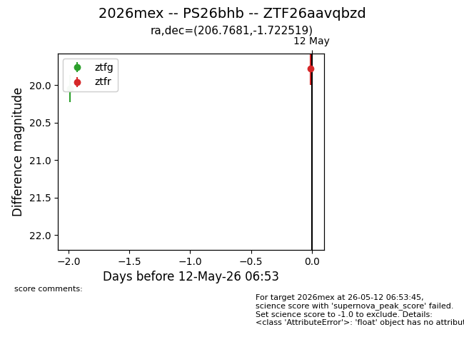
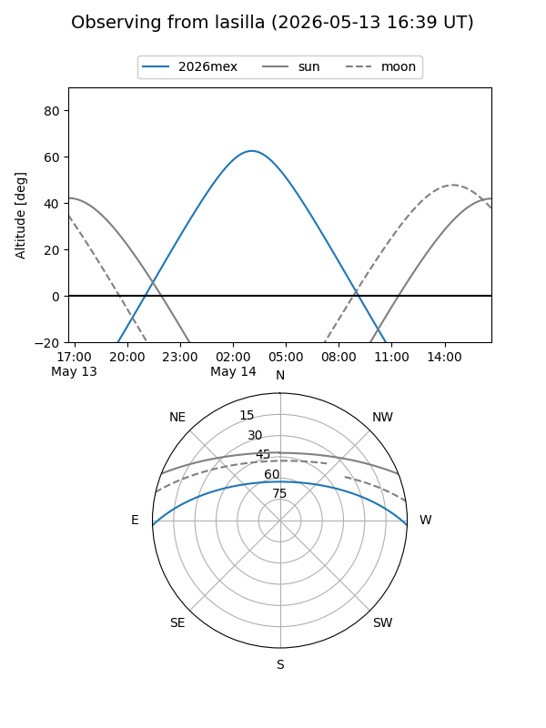
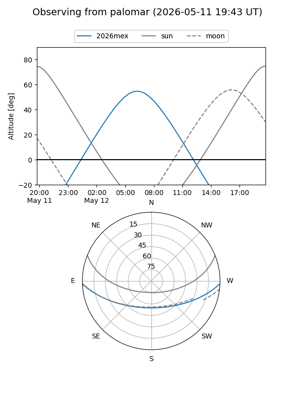
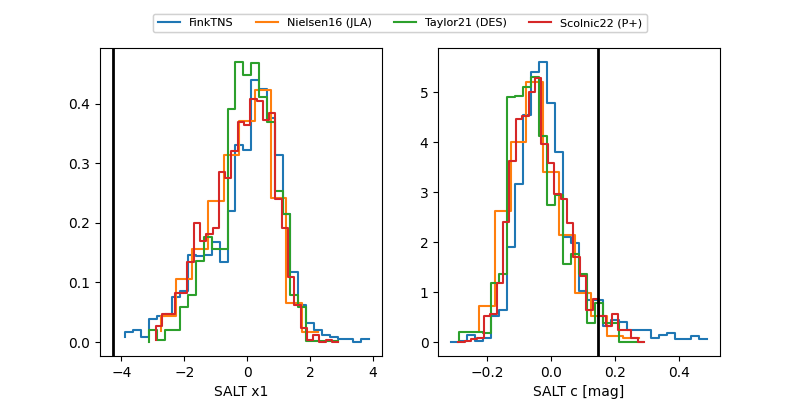

2026mex
Target 2026mex at 2026-05-12 06:55
Aliases and brokers:
FINK: link
Lasair: link
ALeRCE: link
TNS: link
YSE: link
alt names
ZTF26aavqbzd (ztf,fink_ztf)
2026mex (tns,yse)
PS26bhb (panstarrs)
Coordinates:
equatorial (ra, dec) = 206.7681,-1.72252
equatorial (HMS+DMS) = 13:47:04.34,-01:43:21.07
galactic (l, b) = (330.0494,+58.18962)
Flags:
Photometry:
last ztfg=20.04, ztfr=19.78
1 ztfg, 1 ztfr detections
Lightcurve

Visibility


Additional plots
